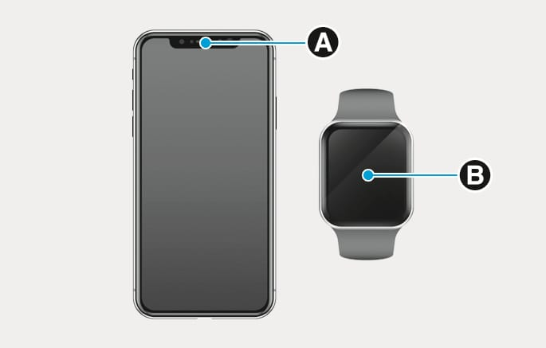

도어 잠그기/잠금 해제하기(태깅)
스마트폰 또는 카드 키를 운전석 또는 동승석 도어 핸들 중앙에 설치된 인증 센서에 2초 이상 태그하면 도어를 잠그거나 잠금 해제할 수 있습니다.
도어 핸들 인증 센서에서 스마트폰이나 카드키를 떼면 도어 핸들이 튀어나옵니다. 3초 이상 태그하는 경우 스마트폰 또는 키드 키를 떼지 않아도 도어 핸들이 튀어나옵니다.
-
인포테인먼트 시스템 설정 메뉴의 차량 > 도어 > 2회 눌러 전체 잠금 해제(세이프티 언락 기능)가 설정되어 있는 상태에서 디지털 키를 도어 핸들 인증 센서에 태그하면 운전석 도어만 잠금 해제됩니다. 이 상태에서 디지털 키를 떼었다가 4초 이내에 한 번 더 태그하면 모든 도어의 잠금이 해제됩니다.
스마트폰을 휴대하고 도어 손잡이에 있는 도어 핸들 잠금/잠금 해제 센서부(음각)를 터치하면 도어가 잠금/잠금 해제 됩니다.
-
인포테인먼트 시스템 차량 설정에서 접근 시 잠금 해제가 설정된 경우, 스마트폰을 휴대하고 앞좌석 도어 손잡이 방향으로 접근하면 자동으로 도어가 잠금 해제됩니다. (사양 적용 시)
다음과 같은 경우 디지털 키로 도어를 잠그려 할 때 경고음이 울리고 도어가 잠기지 않습니다.
-
스마트 키가 차 안에 있는 경우
-
차량의 시동이 꺼지지 않은 경우
-
도어, 후드 또는 테일게이트가 열려 있는 경우
-
UWB 지원 스마트폰을 휴대하고 차량 근처에서 몇 분 동안 머무를 경우, 자동으로 잠금 해제되지 않을 수 있습니다. (사양 적용 시)
-
스마트폰을 뒷주머니 또는 가방 등에 보관하면 신체에 의해 가려져 블루투스 연결이 제한될 수 있고, 도어 잠금/잠금 해제나 시동 시 작동이 지연될 수 있습니다.
-
도어를 잠근 후 도어 핸들을 당겨 잠김 상태를 확인하십시오.
-
잠금 해제 후 30초 이내에 도어를 열지 않으면 도어가 다시 잠깁니다.
-
스마트폰 또는 디지털 카드 키의 NFC 안테나 장착 위치를 도어 핸들 인증 센서에 최대한 가까이 태그해야 합니다.
-
디지털 키가 작동하지 않는 경우, 스마트폰 또는 카드 키를 도어 핸들로부터 10 cm 이상 떼었다 다시 태그하십시오.
-
NFC 안테나 위치는 스마트폰 모델에 따라 다를 수 있습니다. 상세 정보는 스마트폰 제조사에 문의하십시오.
-
삼성 스마트폰의 NFC 안테나 위치는 스마트폰의 설정 앱에서 확인할 수 있습니다(연결 > NFC 및 비접촉 결제).
-
Apple iPhone(A) 및 Apple Watch(B)의 NFC 안테나 위치는 다음과 같습니다.

2C_SmartPhoneSample
-
세이프티 언락(2회 눌러 전체 잠금 해제) 기능이 설정된 경우, 디지털 키를 도어 핸들에 태그하면 운전석 도어만 잠금이 해제되고, 4초 이내에 한 번 더 태그하면 모든 도어가 잠금 해제됩니다.